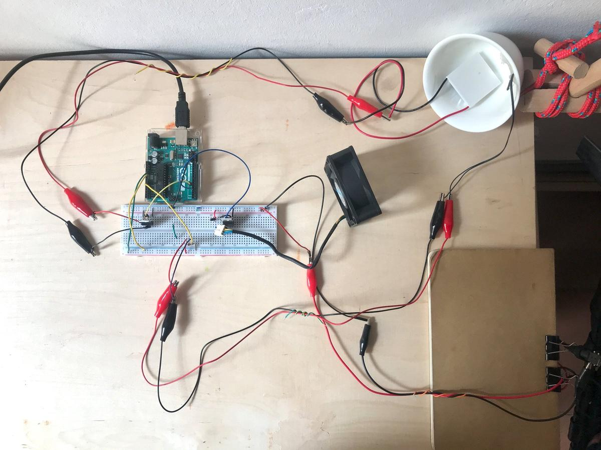
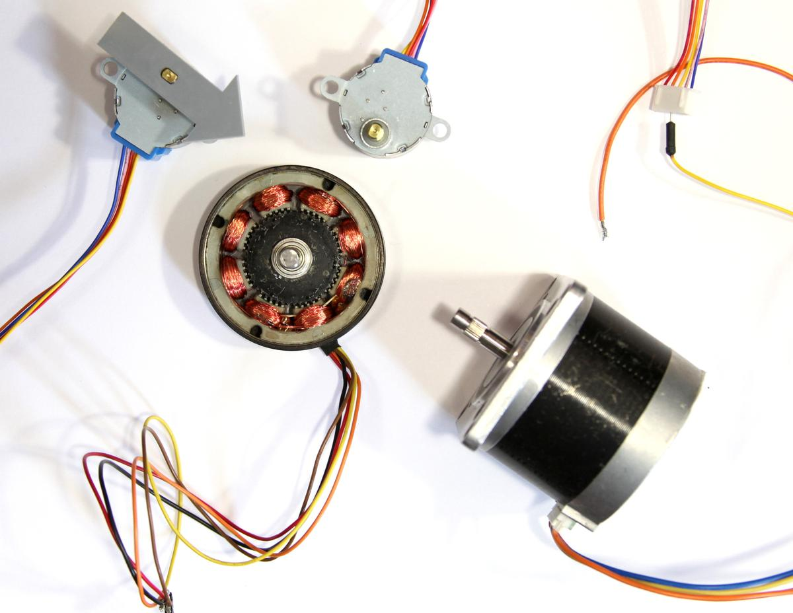
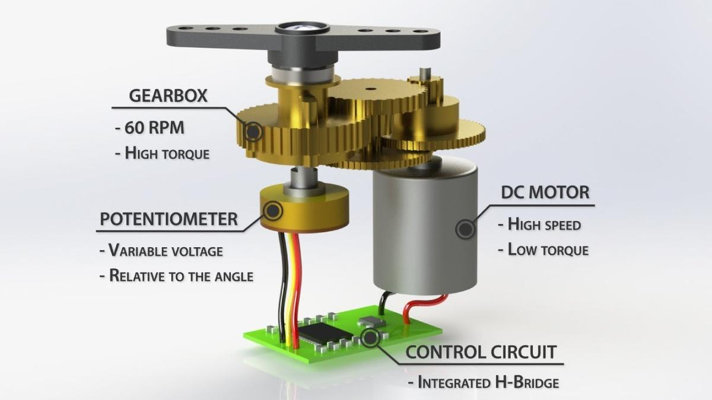
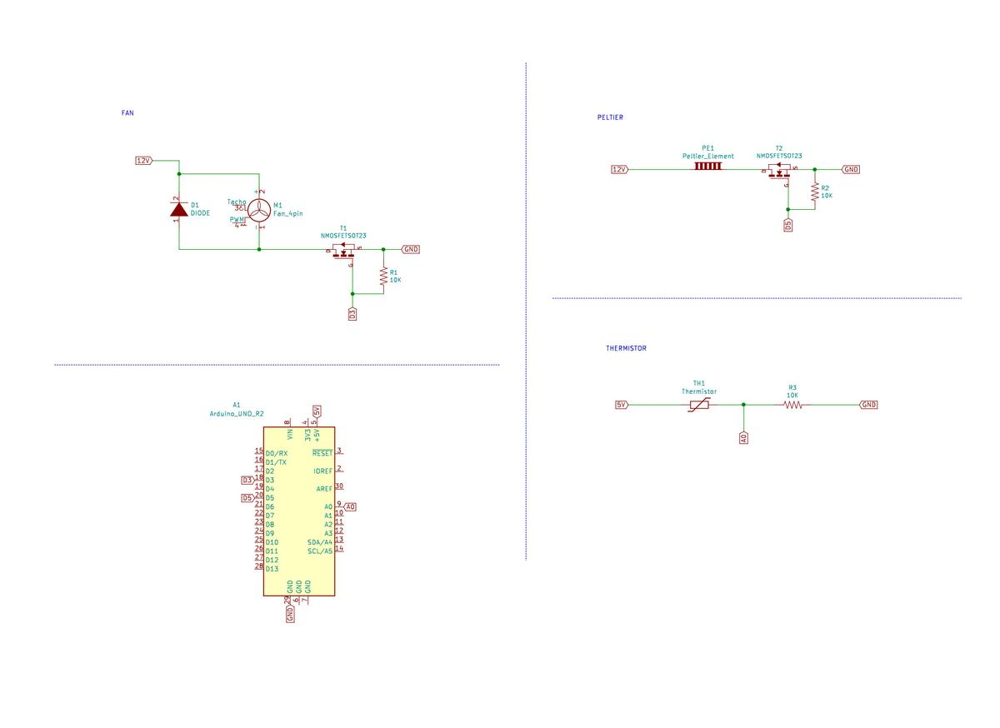
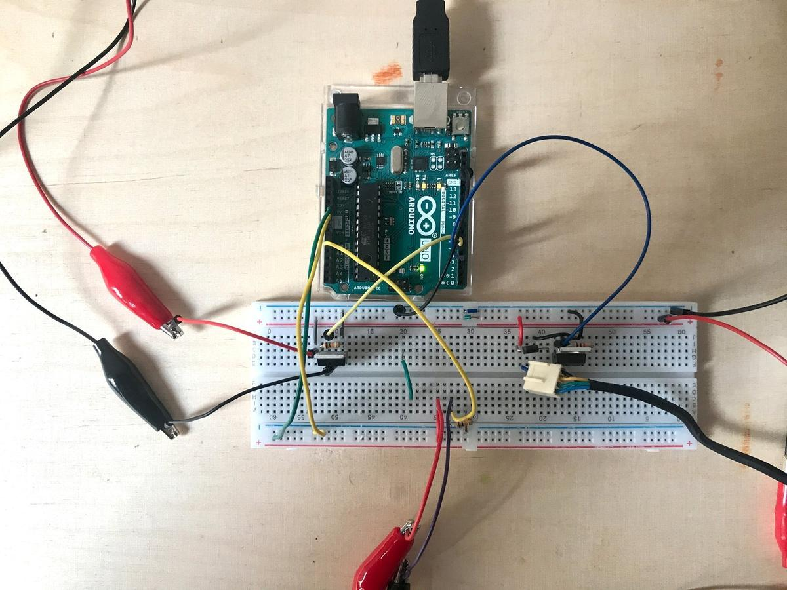
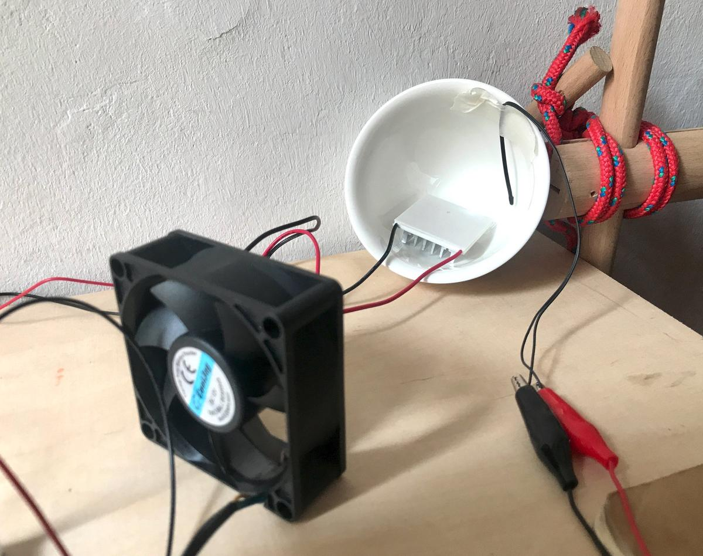
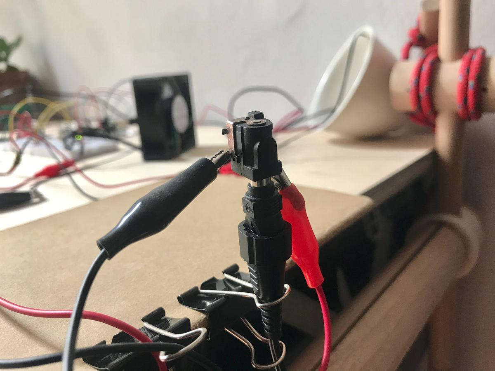

Output devices
This week's assignement is about output devices: we are learning how to make various motors work, what are their mechanisms and principles, when and why use a specific one instead of another.
I'm going to lend a hand to Maud Bausier, my partner, who is building an incubator to grow mycelium or any fermented food (tempeh, sriracha, etc.). I think we could have enough material to finish a prototype at home (covid-19 restrictions).
The main challenges for the moment concern electronics, which consists of: a thermistor (to know the temperature inside the incubator), a Peltier (to heat it), a fan (to cool it), an LCD screen (to know what's going on) and two push buttons to set the desired temperature inside the incubator.

Motors
But first, I needed some basics about motors: a motor is mainly made of coils and magnets. When current goes through a coil, a magnetic field is generated around it. The higher the current, the greater the field. This magnetic field creates polarity which is used to create a rotational force. This force is called the torque and its value depends on the motor's input current. More current implies stronger magnetic field in the coils, that means more attraction/repulsion.
Image source: ITP Physical Computing
DC motor
Maybe the simplest and most common motor in electronics, it converts current electrical energy into mechanical energy. The motor spins in one direction. Switching its polarity changes its direction. Varying the current supplied varies the speed of the motor.
There are two main kinds of DC motor: the brushed one and the brushless one. The first one is more commonly used because it is the cheaper one. The brushless is bit more expensive, but it is less noisy and can last a lot longer because it doesn't need to be maintained, simply because there is almost no friction inside it.
 Image source: Sparkfun: Motors and selecting the right one
Image source: Sparkfun: Motors and selecting the right one
Stepper motor
Stepper motors are different than regular DC motors in that they don’t turn continuously, but move in a series of steps. A stepper motor is a motor that has multiple coils, not just one. By energizing each coil in sequence, you attract the shaft magnets to each coil in the sequence, and you can turn the motor in precise steps, rather than simply rotating continually.

Source: ITP Physical Computing
Servo
A Servo is a small device that has an output shaft. This shaft can be positioned to specific angular positions by sending the servo a coded signal. As long as the coded signal exists on the input line, the servo will maintain the angular position of the shaft. As the coded signal changes, the angular position of the shaft changes.
 Image source: How Servo Motors Work & How To Control Servos using Arduino
As we can see on the image above, a servo motor is composed by a DC motor, a potentionmeter and embedded circuit to control them.
Servo motor appears to be the perfect candidate when we need a full control of the rotation angle, direction and speed of a motor.
MOSFET
A MOSFET (Metal Oxide Semiconductor Field Effect Transistor) is a semiconductor device which is used for switching electronic signals.
TODO: MOSFET description
LCD screen
TODO: LCD screen description
Prototyping an incubator
As I said above, my partner is building an incubator to help us grow mycellium (and other fermented food) and she asked me an hand to help her with the electronic part. In this context, I'll prototype an incubator by using the devices I already have. I'll do it by following the spiral methodology: a first round with the basic features, and then other ones with additional options.
Round #01: the basics
For the first round, I would like to control a fan and a Peltier (thermoelectric cooler) to get an ideal temperature into a closed space, using a Arduino UNO. The Peltier will be used to warm up the temperature and the fan will help us to either cool down or to distribute the heat evenly.
Thermoelectric coolers (TEC or Peltier) create a temperature differential on each side. One side gets hot and the other side gets cool. Therefore, they can be used to either warm something up or cool something down, depending on which side you use.
The Peltier could be used to warm up or cool down the space depending on the wanted temperature, to do so, we apparently have to reverse its polarity. I'll try to explore this track later. I'll focus on the warm side for now.
Because the fan and the Peltier device require a voltage of 12V and the arduino can only supply 5V, I added an external power supply in the circuit. It is then necessary to also include MOSFETs to control how and when the current flows through the devices.
Material
- Arduino UNO (pinout)
- Thermoelectric Cooler (info / datasheet)
- 12V Axial Fan (EverFlow R127025BU DC 12V 0.40AMP 4-pin connector)
- 10K thermistor
- MOSFET N-CH (datasheet)
- 12V external supply
- 10K resistors
- Diode
Schematics
I did a schematic in KiCAD to help me understand the different components ad how to plug them together. Here is a larger image if you like.

File: incubator_01.pro

Code
I attribute the pins values according to my schematics and define some settings, such as the ideal temperature and the accepted range, but also the fan and Peltier power.
I do not want the system to go from a stage "It is too hot, I have to cool the temperature" to a stage "It is too cold, let's heat it now" too quickly. This is why I implemented the value tempRange, saying that there are acceptable values around the ideal, which makes the system less reactive but constant.
The fan and the Peltier do not have to operate at their maximum value all the time. This is why I plugged them on PWM pins, to be more subtle than just HIGH and LOW values. A pulse-width modulation (PWM) pin allow us to simulate an analog behavior by manipulating the frequency of the signal (read the Secrets of Arduino PWM).
In addition, I introduced the values powerFan andpowerPeltier, by mapping a value between 0 and 99 (easier to manipulate) to the real value going from 0 to 255 (analog style), to declare the necessary power to both devices. According to the test I did, a value between 20 and 40 is sufficient and prevents the system from overheating, damaging the wires or the devices.
// PINS
int pinFan = 3;
int pinPeltier = 5;
int pinThermo = 0;
// VARIABLES
int val;
float temp;
// SETTINGS
int powerFan = 20; // 0-99
int powerPeltier = 30; // 0-99
int tempIdeal = 28;
int tempRange = 2;
void setup() {
Serial.begin(9600);
pinMode(pinFan, OUTPUT);
pinMode(pinPeltier, OUTPUT);
}
void thermistor(int RawADC) {
temp = log(((10240000/RawADC) - 10000));
temp = 1 / (0.001129148 + (0.000234125 + (0.0000000876741 * temp * temp ))* temp );
temp = temp - 273.15;
}
void loop(){
int levelPeltier = map(powerPeltier, 0, 99, 0, 255);
int levelFan = map(powerFan, 0, 99, 0, 255);
int a = analogRead(pinThermo);
thermistor(a);
if (temp <= tempIdeal - tempRange) {
analogWrite(pinPeltier, levelPeltier);
analogWrite(pinFan, 0);
Serial.print("Peltier: on / ");
} else if (temp >= tempIdeal + tempRange) {
analogWrite(pinFan, levelFan);
analogWrite(pinPeltier, 0);
Serial.print("Fan: on / ");
} else {
analogWrite(pinFan, 0);
analogWrite(pinPeltier, 0);
}
Serial.print("Temp: ");
Serial.print(temp);
Serial.print(" / Ideal: ");
Serial.println(tempIdeal);
delay(1000);
}
Results
The overall result of this prototype is quite good. The temperature is easily regulated with the Peltier and the fan, and the thermistor obtains precise values.
When I tried plugging in the devices for the first time, I was running them at 12 V continuously, but the wires and MOSFETS quickly became very hot, which was a concern. There was too much current in the circuit. Fortunately, not using them continuously but at regular intervals has given us much better results: the devices always work as we want when they receive less current, at least for my needs. This brings me to the PWM tip (as mentioned above).

I put the thermistor and the Pelier in a cup, to allow the system to increase its temperature without losing too much heat in the surrounding environment. The fan is positioned in front of them, which gives us the possibility to expel the hot air.

Next
Now that the electronics work as I want, I hand over to my partner. The next step will probably be a real test with a closed space to see how quickly we can lower or increase the temperature inside. We are also thinking of using the fan to distribute the heat evenly. Be sure to read Maud's documentation to see her progress on the incubator.